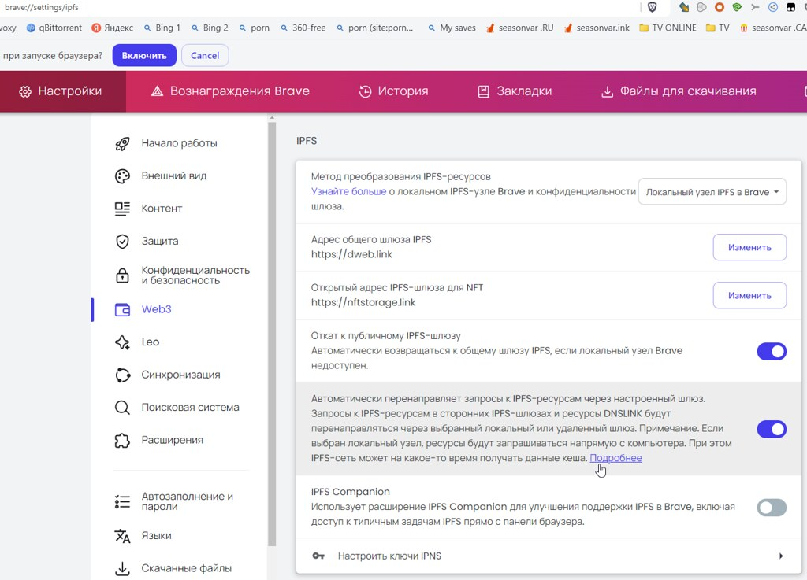

- Тип настройки: PAC-файл
- Тип проблемы: не работают все заблокированные сайты
- Что с сайтом: вместо сайта открывается страница-заглушка / сайт открывается бесконечно долго / ошибка в браузере
- Используемый браузер: Firefox
Описание проблемы
браузер НЕ ПОДХВАТЫВАЕТ файл автонастройки прокси по ссылке https://p.thenewone.lol:8443/proxy.pac; обход блокировок НЕ РАБОТАЕТ.
попытка открыть https://p.thenewone.lol:8443/proxy.pac браузером вызывает появление гейфларе-факапчи ВМЕСТО запрашиваемого файла:
генерал Ясен Х@й, что при подхвате “proxy.pac” браузер никакие факапчи не обкликивает и обкликивать не будет - необходимо устранить самоё гейфларе с их дебильными вы@бонами.
[del, ибо при проверке из-за рубежа на IPFS трафик не попадает]
Все же редирект есть. У меня по ссылке открывается файл на ресурсе gateway.pinata.cloud, просто я не попадаю на проверку CloudFlare. Это IPFS сервис, через который раздается файл, как CDN.

{kind=link}
В этой теме ранее встречал подтверждение про использование IPFS, только на тот момент был другой провайдер.
Интересно. У меня из-за рабочих моментов почти всегда трафик идёт из-за бугра - вероятно, поэтому я вижу напрямую nginx без CDN.
CF-challenge в свою очередь может триггериться по газиллиону причин, включая нестандартный user agent, наличие некоторых расширений в браузере, и даже нестандартную таймзону.
Например, если кто-то решит поиграть в шифропанка, и подменить UA со штатного на тот, что сообщает о себе Tor Browser - челлендж будет появляться значительно чаще.
@kdv, мне нечего добавить к вашим предыдущим двум темам.
Если у вас не работает антизапрет, воспользуйтесь другим сервисом, который у вас работает.
Никто кроме вас о подобной проблеме не сообщал и не сообщает, значит проблема на вашей стороне.
самый тупой вариант.
скачивать через curl
и поставить локальный http-сервер
чтобы прописать http://127.0.0.1/proxy.pac
У CF есть плагин для снижения количества капчей. Правда не уверен, что он сюда применим.
Firefox позволяет указать локальный файл со схемой file://
Веб-сервер не нужен.
а он его не лочит ? чтобы обновлять не мешало
ну и там вообще непонятно пробовал ли он на других браузерах.
и есть ли они
может это какой нибудь Adguard/DrWeb/KAV чудят
лично я стараюсь и ставить и советовать более или менее универсальные решения. у меня и firefox (разные.) и несколько клонов Chrome. и с обходом ограничений нередко проверяешь и там и там
таки-да.
раньше, когда вместо отдачи файла/спама факапчей гейфларе тупо отс@cblв@ло, выручал вариант забрать файлик через VPN и подложить браузеру
пробовал на других машинах и других ОС: Win11, Win7 и бубунте, везде Firefox.
и везде гейфларе лезет со своей факапчей
@ValdikSS, любезный… вам даже больше скажу: у людей не только “гейфларе отс@cblв@ет”, у них еще и ссылка “http://antizapret.prostovpn.org” не открывается по таймауту.
и далеко не все из них знают про магическое число 8443, которое надо к ней добавить; или, скажем, про встроеный анонимайзер в поисковике startpage.com
а без этой ссылки им на форум не так-то просто попасть, чтоб о проблеме сообщить…
включен ли DoH в самом браузере ? если да то какой ?
и на Хромо-клонах не пробовал ?
просто интересно на что оно так реагирует
еще не знаю как в Firefox с ipfs
в том же Brave есть такие настройки

DoH в браузерах выключен, на хромах не пробовал.
есть некоторые подозрения на тырнет-провайдера “ееблайн” - гейфларе без VPN своей факапчей реально подзадирает - на том же stackoverflow.com и ему подобных - в то время как через VPN эти сайты терпимо работают.
а реагирует оно так понятно на что - на мощный удар мочи в собственную башку.
Тьюринг - отец-основатель факапчей, конечно, интеллектом обделён не был… вот только если следовать заветам π(i)д@p@ca, очень легко упустить момент когда стал точно таким же.
и причину они не назовут - “π(i)д@p@cы, сэр”. а потому нет конкретной кучки, в которую, скажем, того же тырнет-провайдера можно рыльцем тыкать: “родной, поговори-ка с гейфларе на предмет расовой кошерности IP-адреса, что ты мне выделил”
может еще от ДНС зависит ?
типа разные ноды по разному настроены или еще что
просто смотрю
one.one.one.one / dns.google отдают
A gateway.pinata.cloud. 5m00s 188.114.98.233
A gateway.pinata.cloud. 5m00s 188.114.99.233
а всякие opendns или https://dns.comss.one/dns-query совсем другие
A gateway.pinata.cloud. 30m08s 104.18.17.3
A gateway.pinata.cloud. 30m08s 104.18.16.3
занятно.
у меня что с VPN, что без него 104.18.хх.3
у меня немного другое. но вдруг похоже
Хромо-клон + dnscrypt без DoH в браузере
и иногда 4pda и аналоги тоже задалбывают “капчей” (ну галка не так бесит как гугл и не дай боги яндекс)
в то же время бывает что долго не просит капчу совсем
[2024-08-12 22:02:59] ::1 4pda.to A PASS 261ms dnscry.pt-saltlakecity-ipv4
[2024-08-13 00:02:27] ::1 4pda.to A PASS 298ms dnscry.pt-budapest-ipv6
[2024-08-13 22:57:34] ::1 4pda.to A PASS 652ms dnscry.pt-dusseldorf-ipv6
[2024-08-14 03:43:49] ::1 4pda.to A PASS 282ms dnscry.pt-chicago-ipv4
у меня и dnscrypt нету. да и, собсно, как он связан - если связан - с ситуацией?
з.ы. что-ж до xyЯндекса, так им кроме факапчи на маркете еще моча в башню давала на предмет пароля от почтового ящика - когда-то куда-то утекал, дескать… восстанавливать доступ стало быть надо контрольным вопросом - ну, там, который ~20 лет назад ставили… а до кучи еще телефон свой им скажи, да паспорт покажи, да задок полижи.
и чего они добились в итоге? - продавание на маркете обвалилось несколько раз(что даже правильно, ибо поискал тогда другие места и нашел дешевле), а вместо их почты теперь шуршит собственный сервер… к которому, между прочим, дебилов, выносящих мозг своими придурями под видом заботы о твоей безопасности, не подпускают.
и да, в ихних тырнетах пописывают, что нет поддержки IPFS в фаерфоксе - не набралось голосов за фичу:
про “поможет” попробовать DoH one.one.one.one (cloudflare)
или другие доступные.
даже если не поможет == будем знать что не в ДНС дело
может там вообще для всей “сети” провайдера и любых сайтов cloudflare капча запрашивается
как например для тех кто через ТОР сидит
Проверяя IP-адрес запроса, Cloudflare может идентифицировать известные вредоносные IP и сети. Cloudflare поддерживает большую базу данных IP, которая может идентифицировать известные источники спама, вредоносных программ и т.д.
некоторым смена ДНСа помогает при подобных проблемах
собсно, сделал - результат тот же.
вопрос сделал ли правильно: выбрал в фаерфоксе Max protection c гейфларе в качестве DNS-провайдера; браузер не перезапускал.
что и требовалось доказать: ни один балбес, ведущий такие списки, никогда не утруждает себя хотя бы устаревшие сведения из них убирать. про проверку на соответствие действительности вообще молчу:
- эй, гейфларе. “системный анализ”
- вы что, ребят! я таких словей не знаю…
жаль ;\
вот та же самая фигня на 4pda…
глядя на эту картинку, так и хочется спросить: “Раз все в порядке, х@ли ты тогда людям мозги е#ешь?!” 
проблема не в самой капче как писал выше
а то что иногда за весь день ни разу не просит
или наоборот. отвлекся вкладка/таб выгрузился (Auto Tab Discard suspend - аддон есть и под Хромы и под Файрфокс) и оно опять/снова требует капчу
почитал. потом обновил страницу. и всё равно требует капчу заново
позволю себе возразить.
налицо симптоматика дефекта программного обеспечиния. да и формат обсуждения соответствующий.
проблема может и не в самой факапче… а в том, что как бы ни выпрыгивали из штанов разработчики этой системы, объективно невозможно сложить слово “голова” из набора букв “О”, “А”, “П” и “Ж”.
отсюда вывод: чем меньше связываешься с гейфларе, тем устойчивее работает твоя система. ибо из-за них обосерается в тех местах, где и представить было невозможно. зашел такой довольный из свежеустановленой винды ишаком восьмым на waterfox.org себе waterfox скачать - и начинаешь неспешно посасывать херес: гейфларе-факапча в ишаке восьмом не работает.